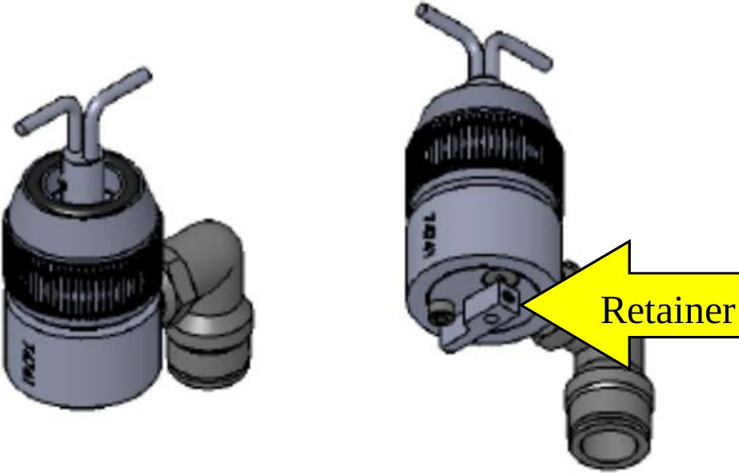
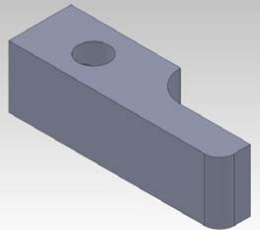

Doc no. MOC-TSB-11-10 // Vol. 11 No. 10 // Sep 15, 2011 // Engine
Bilstein Universal Oil Adapter
The lever on the Universal Drain Plug Oil Adapter (74741) can work loose, because the set screw in the Retainer Lever gets retightened again and again and can strip the threads inside the lever. MOC now makes the Long Retainer Lever out of steel instead of aluminum.
What's new
- Note which way the lever is facing, then remove the aluminum lever by unscrewing the set screw.
- Discard the aluminum lever and attach the new steel lever in the same location with the original set screw.
If your Universal Drain Plug Adapter has this problem, contact the Machine and Equipment Department with the subject "74741 Replacement Lever", your name and phone number, and your shipping address. A replacement lever will be shipped to you.
Attach the new lever facing the same direction as the one you removed, with the set screw hole in the lever aligned with the flat spot on the retainer.
Contact
For more information, contact the Machine & Equipment Department at 866.244.6621.


Part numbers
| Part No. | Description | Notes |
|---|---|---|
| 74741 | Retainer Lever Adapter, Universal Drain Plug |